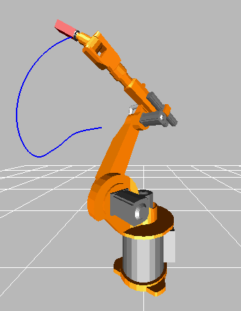

RobotR3Library to demonstrate robot system models based on the Manutec r3 robot |
|
Package Contents
|
Model of one axis of robot (controller, motor, gearbox) with simple load |
|
|
Six degree of freedom robot with path planning, controllers, motors, brakes, gears and mechanics |
|
|
Library of components of the robot |
Information
This information is part of the Modelica Standard Library maintained by the Modelica Association.
This package contains models of the robot r3 of the company Manutec. These models are used to demonstrate in which way complex robot models might be built up by testing first the component models individually before composing them together. Furthermore, it is shown how CAD data can be used for animation.
The following models are available:
oneAxis Test one axis (controller, motor, gearbox). fullRobot Test complete robot model.
The r3 robot is no longer manufactured. In fact the company Manutec does no longer exist. The parameters of this robot have been determined by measurements in the laboratory of DLR. The measurement procedure is described in:
Tuerk S. (1990): Zur Modellierung der Dynamik von Robotern mit
rotatorischen Gelenken. Fortschrittberichte VDI, Reihe 8, Nr. 211,
VDI-Verlag 1990.
The robot model is described in detail in
Otter M. (1995): Objektorientierte Modellierung mechatronischer
Systeme am Beispiel geregelter Roboter. Dissertation,
Fortschrittberichte VDI, Reihe 20, Nr. 147, VDI-Verlag 1995.
This report can be downloaded as compressed postscript file
from: http://www.robotic.dlr.de/Martin.Otter.
The path planning is performed in a simple way by using essentially the Modelica.Mechanics.Rotational.KinematicPTP block. A user defines a path by start and end angle of every axis. A path is planned such that all axes are moving as fast as possible under the given restrictions of maximum joint speeds and maximum joint accelerations. The actual r3 robot from Manutec had a different path planning strategy. Today's path planning algorithms from robot companies are much more involved.
In order to get a nice animation, CAD data from a KUKA robot is used, since CAD data of the original r3 robot was not available. The KUKA CAD data was derived from public data of KUKA. Since dimensions of the corresponding KUKA robot are similar but not identical to the r3 robot, the data of the r3 robot (such as arm lengths) have been modified, such that it matches the CAD data.
In this model, a simplified P-PI cascade controller for every axes is used. The parameters have been manually adjusted by simulations. The original r3 controllers are more complicated. The reason to use simplified controllers is to have a simpler demo.